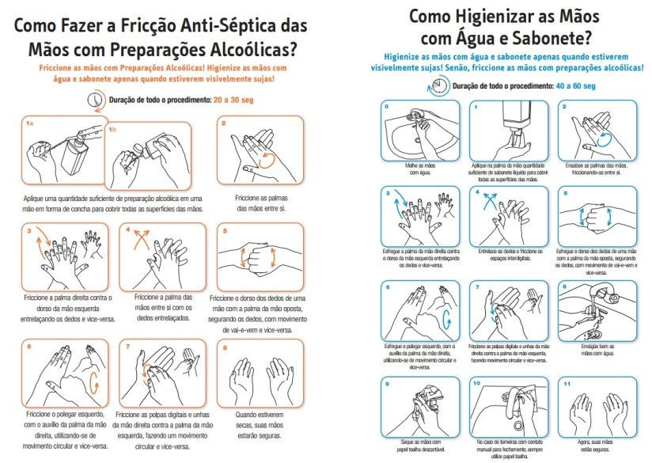

Como se proteger?
As recomendações de prevenção à COVID-19 são as seguintes:
Lave com frequência as mãos até a altura dos punhos, com água e sabão, ou então higienize com álcool em gel 70%.
Ao tossir ou espirrar, cubra nariz e boca com lenço ou com o braço, e não com as mãos.
Evite tocar olhos, nariz e boca com as mãos não lavadas.
Ao tocar, lave sempre as mãos como já indicado.
Mantenha uma distância mínima de cerca de 2 metros de qualquer pessoa tossindo ou espirrando.
Evite abraços, beijos e apertos de mãos. Adote um comportamento amigável sem contato físico, mas sempre com um sorriso no rosto.
Higienize com frequência o celular e os brinquedos das crianças.
Não compartilhe objetos de uso pessoal, como talheres, toalhas, pratos e copos.
Mantenha os ambientes limpos e bem ventilados.
Evite circulação desnecessária nas ruas, estádios, teatros, shoppings, shows, cinemas e igrejas. Se puder, fique em casa.
Se estiver doente, evite contato físico com outras pessoas, principalmente idosos e doentes crônicos, e fique em casa até melhorar.
Durma bem e tenha uma alimentação saudável.
Utilize máscaras caseiras ou artesanais feitas de tecido em situações de saída de sua residência.

Quais são os sintomas?
Os sintomas da COVID-19 podem variar de um simples resfriado até uma pneumonia severa. Sendo os sintomas mais comuns:
Tosse
Febre
Coriza
Dor de garganta
Dificuldade para respirar
Como é transmitido?
A transmissão acontece de uma pessoa doente para outra ou por contato próximo por meio de:
Toque do aperto de mão
Gotículas de saliva
Espirro
Tosse
Catarro
Objetos ou superfícies contaminadas, como celulares, mesas, maçanetas, brinquedos, teclados de computador etc.